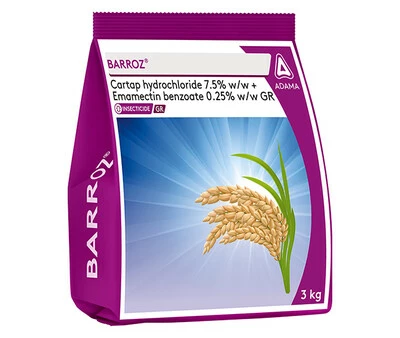

A unique granular formulation for reliable rice stem borer (Dead Heart) control. Barroz has Cartap Hydrochloride 7.5% + Emamectin benzoate 0.25% as its AI.
Technical Name: Cartap Hydrochloride 7.5% w/w + Emamectin benzoate 0.25% w/w GR
Major Crops: Rice.
Mode of action: It has a dual-mode of action which benefits the farmer in gaining good resistance management and better control of Stem Borer (Dead Heart) for a longer period.
Target Pest: Stem border.
Presentation Available: 3kg.
Company: Adama